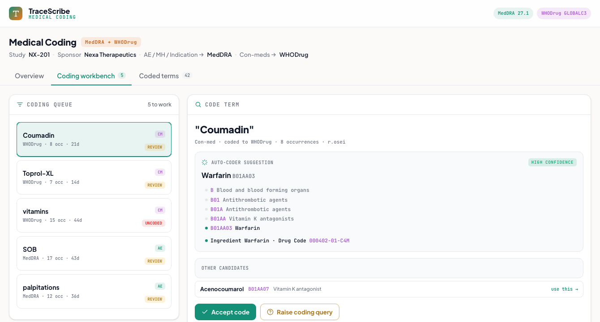

Medical Coding
A medical-coding workbench: site verbatim terms coded to controlled dictionaries, adverse events and medical history to MedDRA, concomitant medications to WHODrug, by auto-coding, with the rest worked manually or queried. Uncoded terms block database lock.
What it does
Standardizes the free-text terms reported by sites so the data can be grouped and analyzed. Adverse events, medical history, and indications code to MedDRA; concomitant medications code to WHODrug. The coder works a queue of the verbatims the auto-coder could not resolve, and the backlog has to reach zero before database lock.
How it works
- Auto-coding: exact and synonym matching codes most verbatims on entry; the rest fall to the coding queue. Confirmed matches are added to the synonym list so the same verbatim auto-codes next time.
- The coding workbench: pick a queued term and see the auto-coder's suggestion with the full dictionary path, MedDRA (SOC to PT to LLT) or WHODrug (the five-level ATC ladder plus the ingredient and the Drug Code = DRN + Seq1 + Seq2). Accept it, pick an alternative candidate, or raise a coding query to the site when the verbatim is too vague (for example "vitamins" or "pain med").
- Two dictionaries, versioned: MedDRA 27.1 for events and WHODrug GLOBALC3 for drugs; each coded term records the dictionary version, since both up-version twice a year.
- Status and backlog: every term is auto-coded, manually coded, needs-review, queried, or uncoded; the uncoded backlog and its aging are tracked as a database-lock blocker.
A from-scratch recreation grounded in coding practice (MedDRA v27.1 hierarchy, the WHODrug Drug Code = DRN + Seq1 + Seq2 with real ATC classifications, realistic auto-coding rates, and the coding-query workflow). Synthetic study; the MedDRA SOC/PT and WHODrug ATC codes are the real vocabulary, and every figure is computed from the term list.

Static preview - click to open the live, interactive demo